Надо помнить, что понятие майндмэп объединяет множество различных инструментов, которые внешне выглядят как ментальная карта, но совершенно разные по своей сути.
В дизайн-процессе майдмэпы наибольшую пользу приносят, когда используются в качестве инструмента быстрого поиска оригинальных идей. Техника майдмэппинга помогает за короткий промежуток времени нарабатывать существенное количество идей и гипотез для решения поставленных задач. При таком подходе майдмэп — это инструмент индивидуального, а иногда и группового брейншторма. Соответственно, на него распространяюстя все те же правила, что и на классический брейншторм:
— Скорость
— Отсутсвие оценочных суждений
— Приветствие абсурдных и сумасшедших идей
— Смешивание и дополнение уже существующих идей
-
 Курс
Дизайн в цифровой среде
Курс
Дизайн в цифровой среде
-
 4. МайндмэпЛекции
4. МайндмэпЛекции 

Введение
Задача и идея
Дизайн-исследование и фокусировка
-
6Виды исследований
-
7Тренды веб-дизайна
-
8Развитие визуального вкуса и получение нового опыта
-
9Флэт-иллюстрация
Оcновы графического дизайна
Прототипирование
Контент
Дизайн
-